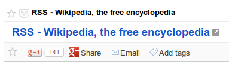

目前 Pocket 支援 3 個 feed/channel：（其中 USERNAME 要代換成使用者帳號）
-
Unread List - http://getpocket.com/users/USERNAME/feed/unread
-
All Items - http://getpocket.com/users/USERNAME/feed/all
預設 RSS feeds 是受到密碼保護的，但可以從 Privacy Control 的設定關閉。
目前（2012-12）訂閱的內容還是一堆 "Untitled"。不過就算這個問題被排除了，每一個項目的內容也單純是 URL 而已，並沒有辦法達到離線閱讀的效果…

參考資料
其他文件
-
Pocket | RSS feed lists most entries as "Untitled… (2012-10-17)
-
Pocket | RSS title error (2012-04-21) - 標題都變成 Untitled，從 4 月份這個問題第一次被反應，到了 8 月份官方還是回說 "沒時間改"。
-
Use Calibre to combine all of your Google Reader blogs | Scott Petrovic (2011-07-16) - 提到 "teaser post"，指的應該就只有 URL 但沒有內容的 post 吧？